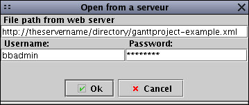

GanttProject - Load/Save from/on a web server
Since 1.9.8, GanttProject allows you to dowload a project directly from a web server.
You can select the URL of the file (and login+password if necessary) and work on
the file. Then you can save the project on your hard-drive

With a special server, you can dowload AND save the project directly
to/from the server. Your server must be a WebDAV-enabled-server.
It doesn't work with a standard Apache web server.